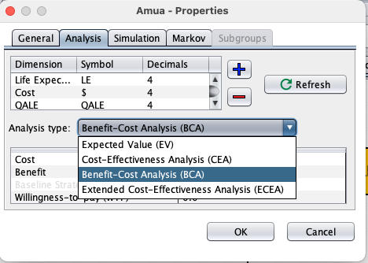
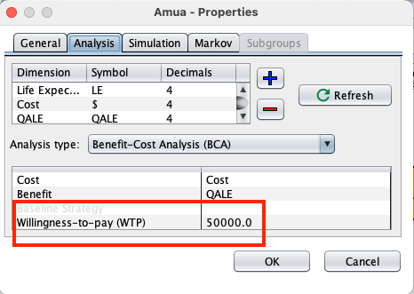
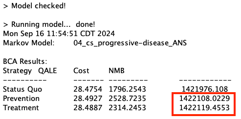
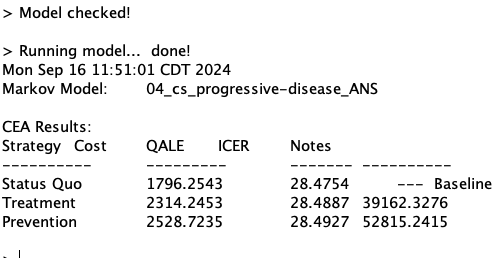

Primary Results: Progressive Disease
| Strategy | ICER |
|---|---|
| Status Quo | - |
| Treatment | 49,513 |
| Prevention | 139,630 |
Treatment is cost-effective at WTP=$50,000/QALY—but barely.
How sensitive is this result to the input parameter values used?
Explain the purpose of deterministic sensitivity analysis and provide examples of one-way versus two-way analyses.
Detail the advantages/disadvantages of deterministic sensitivity analysis.
\text{NHB}_s = E_s - \frac{C_s}{\lambda} where E_s is effectiveness of strategy s, C_s is cost of s and \lambda is WTP threshold.
\text{NMB}_s = E_s \times \lambda - C_s where E_s is effectiveness of strategy s, C_s is cost of s and \lambda is WTP threshold.
E_1 = 0.07 years
E_2 = 0.10 years
C_1 = 1,500
C_2 = 2,800
\lambda = 50,000 per year of life saved
ICER = \frac{2800-1500}{0.10 - 0.07} \\ = 43,333 \\
NHB_1 = 0.07 - 1500/50000 = 0.040 \\ NHB_2 = 0.10 - 2800/50000 = 0.044 \\ \text{Incremental } NHB = 0.044 - 0.040 = 0.004
NHB_1 = 0.07 \times 50000 - 1500 = 2000 \\ NHB_2 = 0.10 \times 50000 - 2800 = 2200 \\ \text{Incremental } NHB = 2200 - 2000 = 200




| Strategy | ICER |
|---|---|
| Status Quo | - |
| Treatment | 49,513 |
| Prevention | 139,630 |
Treatment is cost-effective at WTP=$50,000/QALY—but barely.
How sensitive is this result to the input parameter values used?
Markov model examining strategies for HIV prevention among serodiscordant couples seeking conception (woman does not have HIV and male has HIV)
We know that if the male partner is consistently on medication for HIV (i.e., resulting in virologic suppression), then the risk of transmission is small regardless of the woman taking PrEP (pre-exposure prophylaxis)
And we also know that PrEP has traditionally been really costly
Under pay for performance policies in the US, physicians or hospitals are paid more for meeting evidence-based quality targets
Study objective: Illustrate how pay-for-performance incentives can be quantitatively bounded using cost-effectiveness modeling, through the application of reimbursement to hospitals for faster time-to-tPA for acute ischemic stroke
When administered quickly after stroke onset (within three hours, as approved by the FDA), tPA helps to restore blood flow to brain regions affected by a stroke, thereby limiting the risk of damage and functional impairment
Subgroups/sub-populations, including different age cohorts & risk levels
Different perspectives (societal; modified societal; etc)
Hypothetical scenarios (“optimistic” and “conservative” scenarios; for example, if we have little evidence of long-term survival associated with medication X, we might have an optimistic versus conservative scenario)
Time horizons